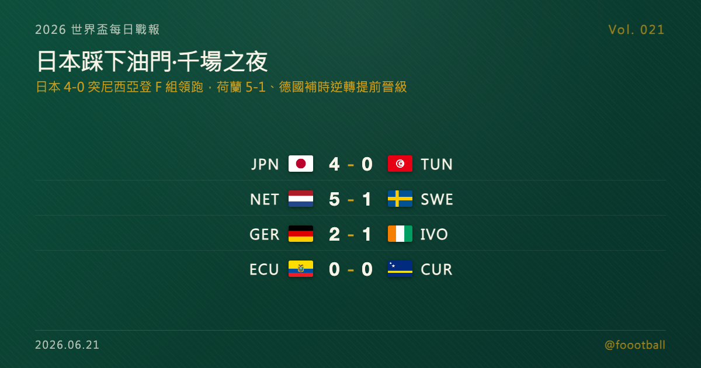

日本踩下油門：4-0 完勝突尼西亞、上田綺世梅開二度，與荷蘭並列領跑 F 組——這也是世界盃史上第 1,000 場
2026 世界盃 F 組次輪，日本在蒙特雷 4-0 完勝突尼西亞——鎌田大地第 4 分鐘破門、改寫日本隊世界盃最快進球，上田綺世梅開二度、伊東純也再添一城，與荷蘭並列領跑 F 組；這也被 FIFA 記為世界盃史上第 1,000 場。E 組德國補時逆轉象牙海岸、兩戰全勝提前晉級。

2026 世界盃每日戰報 Vol. 021｜C 小組賽｜E／F 兩組次輪賽果
§1 即時比分戰報
2026 世界盃小組賽次輪打到 E、F 兩組，四場全部結束，而這一夜屬於亞洲。日本在墨西哥蒙特雷 4-0 完勝突尼西亞——鎌田大地開賽第 4 分鐘就破門、上田綺世上下半場梅開二度、伊東純也下半場再添一城。更巧的是，這場比賽恰好被 FIFA 記為世界盃史上第 1,000 場正式比賽。憑這場大勝，日本與同輪 5-1 擊敗瑞典的荷蘭同積 4 分、並列 F 組領跑。E 組這邊，德國在先失一球的情況下靠後備溫達夫（Deniz Undav）梅開二度、補時完成逆轉，2-1 擊敗象牙海岸、兩戰全勝提前確定晉級淘汰賽（32 強）；厄瓜多與庫拉索則 0-0 互交白卷。以下是本輪四場賽果：
| 賽事 | 比分 | 場館 | 焦點 |
|---|---|---|---|
| 🇯🇵 日本 — 🇹🇳 突尼西亞 | 4 - 0 | 蒙特雷 Estadio Monterrey | 世界盃第 1,000 場；鎌田 4'、上田綺世 31'＋84'（梅開二度）、伊東 69' |
| 🇳🇱 荷蘭 — 🇸🇪 瑞典 | 5 - 1 | 休士頓 NRG Stadium | 布羅貝 5'、17' 雙響，加克波下半場梅開二度，薩默維爾 89'；埃蘭加 59' 扳回一城 |
| 🇩🇪 德國 — 🇨🇮 象牙海岸 | 2 - 1 | 多倫多 BMO Field | 凱西 30' 先進球，後備溫達夫 68'、補時 90+4' 逆轉；德國確定晉級 |
| 🇪🇨 厄瓜多 — 🇨🇼 庫拉索 | 0 - 0 | 堪薩斯城 Arrowhead Stadium | 互交白卷，庫拉索門將魯姆連番撲救守住一分 |
四場分屬 E、F 兩組次輪。F 組形成「荷日雙雄」格局：荷蘭與日本雙雙大勝、同積 4 分並列領跑，瑞典 3 分緊追、突尼西亞兩戰皆墨墊底；E 組則由德國以兩戰全勝之姿提前鎖定晉級，身後象牙海岸、厄瓜多、庫拉索仍在搶最後一張門票。§2 是兩組目前的形勢，§4 與同步發佈的特刊則聚焦今晚最大的主角——日本。
§2 排行榜區：E／F 兩組次輪過後形勢
F 組（次輪打完）——這個由荷蘭領銜的小組，次輪兩場都是大勝局面收場。荷蘭與日本各拿到一勝一和、同積 4 分並列領跑，連淨勝球都同為 +4，靠進球數（荷蘭 7、日本 6）暫分先後；瑞典 3 分緊追在後，末輪仍握有出線主動權；突尼西亞兩戰皆墨、已確定出局：
| # | 球隊 | 賽 | 勝 | 和 | 負 | 進 | 失 | 差 | 分 |
|---|---|---|---|---|---|---|---|---|---|
| 1 | 🇳🇱 荷蘭 | 2 | 1 | 1 | 0 | 7 | 3 | +4 | 4 |
| 2 | 🇯🇵 日本 | 2 | 1 | 1 | 0 | 6 | 2 | +4 | 4 |
| 3 | 🇸🇪 瑞典 | 2 | 1 | 0 | 1 | 6 | 6 | 0 | 3 |
| 4 | 🇹🇳 突尼西亞 | 2 | 0 | 0 | 2 | 1 | 9 | -8 | 0 |
E 組（次輪打完）——德國兩戰全勝、6 分一馬當先，且因其餘三隊末輪最多只追到 6 分、淨勝球也難以超越，德國已提前確定晉級淘汰賽（32 強）；象牙海岸 3 分暫居次席，厄瓜多、庫拉索同積 1 分、靠淨勝球分先後，末輪都仍有空間：
| # | 球隊 | 賽 | 勝 | 和 | 負 | 進 | 失 | 差 | 分 |
|---|---|---|---|---|---|---|---|---|---|
| 1 | 🇩🇪 德國 | 2 | 2 | 0 | 0 | 9 | 2 | +7 | 6 |
| 2 | 🇨🇮 象牙海岸 | 2 | 1 | 0 | 1 | 2 | 2 | 0 | 3 |
| 3 | 🇪🇨 厄瓜多 | 2 | 0 | 1 | 1 | 0 | 1 | -1 | 1 |
| 4 | 🇨🇼 庫拉索 | 2 | 0 | 1 | 1 | 1 | 7 | -6 | 1 |
本屆晉級規則：12 個小組、每組前兩名加上 8 個最佳第三名，共 32 隊晉級淘汰賽。E 組的德國已提前把出線收進口袋，但次名仍懸而未決——象牙海岸、厄瓜多甚至淨勝球落後的庫拉索，末輪都還握有一定機會。F 組則更膠著：荷蘭與日本同分同淨勝球、僅以進球數分先後，瑞典只要末輪贏球就能反超，頭名與晉級名額都要等最後一輪才見真章。末輪（台北時間 6/26 凌晨前後、美加墨 6/25）的對位是：F 組日本對瑞典、突尼西亞對荷蘭；E 組厄瓜多對德國、庫拉索對象牙海岸。兩支已無懸念的球隊——德國確定晉級、突尼西亞確定出局；其餘各隊，末輪都還有得算。
§3 賽事摘要
- 日本 4-0 突尼西亞：本日最受矚目的一戰，也是 FIFA 記載的世界盃第 1,000 場正式比賽。日本開賽第 4 分鐘就由鎌田大地破門，這也改寫了日本隊在世界盃的最快進球紀錄；上田綺世第 31 分鐘禁區邊緣怒射、第 84 分鐘頭槌再入一球，完成個人梅開二度，伊東純也則在第 69 分鐘單刀推射鎖定大局。日本全場壓制、四球零封，與荷蘭同積 4 分並列領跑 F 組。本場焦點與日本的小組賽軌跡，詳見 §4 與同步發佈的特刊。
- 荷蘭 5-1 瑞典：F 組另一場大勝。荷蘭前鋒布羅貝（Brian Brobbey）上半場第 5、17 分鐘就雙響砲、早早奠定基礎，加克波（Cody Gakpo）下半場再梅開二度，薩默維爾（Crysencio Summerville）第 89 分鐘錦上添花。瑞典僅由埃蘭加（Anthony Elanga）第 59 分鐘扳回一城。荷蘭以這場 5-1 把進球數堆到全組最高，與日本並列領跑、暫居頭名；瑞典則手握 3 分，末輪對日本仍是一場關鍵的出線戰。
- 德國 2-1 象牙海岸：一場後備球員主導的逆轉。象牙海岸由凱西（Franck Kessié）第 30 分鐘先馳得點，德國則在下半場換上溫達夫（Deniz Undav）後扭轉戰局——他第 68 分鐘扳平、補時第 90+4 分鐘再入一球，替德國完成 2-1 逆轉。憑這場勝利，德國兩戰全勝、提前確定晉級淘汰賽。象牙海岸雖落敗，仍以 3 分暫居次席、末輪保有出線主動權。
- 厄瓜多 0-0 庫拉索：兩隊互交白卷、握手言和。場上機會有限，庫拉索門將魯姆（Eloy Room）多次關鍵撲救，替球隊守下寶貴的一分。對首次踏上世界盃舞台的庫拉索而言，能在次輪逼平厄瓜多、拿下隊史世界盃第一分，已經是寫進隊史的一頁；厄瓜多則兩戰僅得 1 分，末輪面對德國，出線之路驟然吃緊。
§4 焦點觀察｜千場之夜，藍武士踩下油門
世界盃踢到次輪，日本給了亞洲球迷一個最痛快的夜晚。
在墨西哥蒙特雷，日本 4-0 完勝突尼西亞：鎌田大地開賽第 4 分鐘的破門，改寫了日本隊在世界盃的最快進球紀錄；上田綺世上下半場各入一球、完成梅開二度；伊東純也則在第 69 分鐘單刀推射。四球零封的同時，日本把首輪 2-2 逼平荷蘭的那股氣勢，徹底延續了下來——如今他們與荷蘭同積 4 分，並列 F 組領跑。對強隊不怯場、對必須拿下的比賽不手軟，這正是一支志在走遠的球隊該有的樣子，也讓末輪那場對瑞典的出線生死戰，多了一層「能不能搶下頭名」的看頭。
而這一夜還有一層特別的份量：這場比賽，被 FIFA 記為世界盃史上第 1,000 場正式比賽。從 1930 年烏拉圭蒙特維多的揭幕戰算起，96 年後的這一刻，恰好落在了日本與突尼西亞的腳下。
📖 完整特刊《千場之夜，藍武士踩下油門：日本 4-0 突尼西亞全解析》已同步發佈，把這四顆球的解剖、上田綺世的中鋒答卷、森保一在久保建英缺陣下的調整、日本從逼平荷蘭到完勝突尼西亞的小組賽軌跡與 F 組出線算盤，以及這場「第 1,000 場」背後的世界盃歷史，完整講透： 👉 https://foootball.twtools.cc/articles/worldcup-special-2026-06-21-japan/
在日本的大勝之外，這一夜的另一個關鍵詞是「逆轉」。E 組的德國，在先失一球、一度落後的情況下，靠著一次果斷的換人，用後備溫達夫的梅開二度，在補時階段完成逆轉。豪門的價值，有時候正體現在「踢得不順時，板凳上還有人能站出來」這件事上。
§5 接下來看點
E、F 兩組次輪收官後，最後一輪的看點已經浮現。F 組是全場焦點：荷蘭與日本同積 4 分、同淨勝球、僅以進球數分先後，末輪日本對瑞典、突尼西亞對荷蘭——日本只要擊敗已無退路的瑞典，就有望搶下頭名；而瑞典若贏球便能反超日本、改寫整組形勢，這將是一場不折不扣的出線生死戰。荷蘭則面對已確定出局的突尼西亞，理論上佔得便宜，但頭名歸屬仍要看日本那邊的結果。E 組方面，德國雖已提前晉級，但象牙海岸、厄瓜多、庫拉索之間的次名與最佳第三名之爭，仍將在末輪見真章——厄瓜多末輪碰上的，正是已經晉級、可能輪換的德國。與此同時，本屆其餘小組的次輪賽事也將陸續登場。最新的賽果與形勢，Vol. 022 接著報。
常見問題
Q：6/21 這輪哪一場最值得看？ A：是日本 4-0 突尼西亞。日本開賽第 4 分鐘就由鎌田大地破門、改寫隊史世界盃最快進球，上田綺世梅開二度、伊東純也再添一城，四球零封、與荷蘭並列領跑 F 組。這場比賽同時被 FIFA 記為世界盃史上第 1,000 場正式比賽，別具意義。完整解析另見同步發佈的日本特刊。
Q：日本出線了嗎？F 組現在誰領先？ A：還沒有定論。日本與荷蘭同積 4 分（各一勝一和）、同為淨勝球 +4，靠進球數分先後，荷蘭以 7 比 6 暫居頭名。瑞典 3 分緊追，末輪日本對瑞典是一場關鍵的出線戰——日本贏球大有機會搶下頭名，瑞典若取勝則能反超。頭名與晉級都要等最後一輪才會明朗。
Q：德國確定晉級了嗎？ A：確定了。德國兩戰全勝、積 6 分，由於同組其餘三隊末輪最多只能追到 6 分、且淨勝球難以超越德國的 +7，德國已提前鎖定晉級淘汰賽（32 強），是 E 組第一張確定的門票。
Tags: 世界盃, 2026世界盃, 日本, 上田綺世, 鎌田大地, 伊東純也